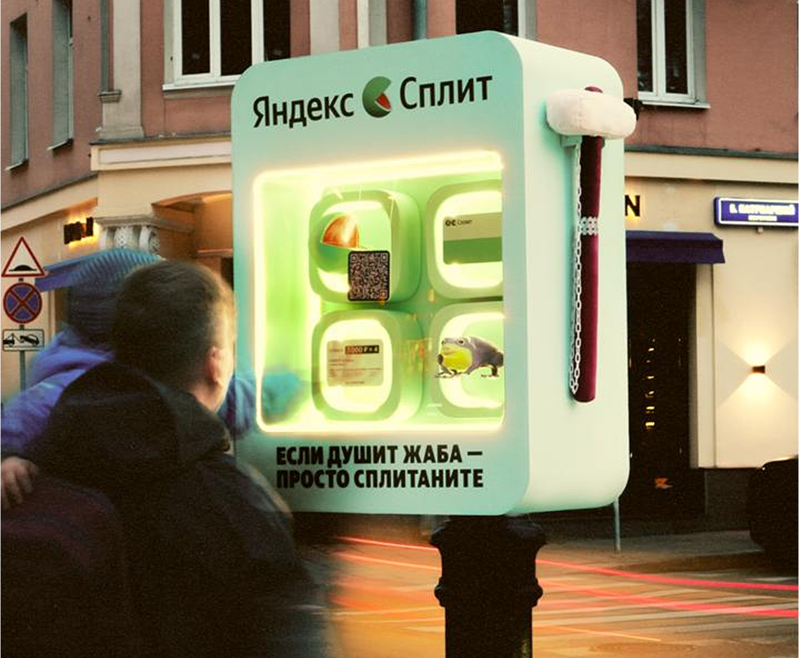

ЗАДАЧА
Сделать Сплит заметнее и через понятный жизненный сценарий объяснить его главную пользу: покупку можно оплатить частями, а не отдавать всю сумму сразу.
ЛИЧНОЕ ПОРТФОЛИО2026
Brand activation
Крылатую фразу «жаба душит» превратили в городской спецпроект: SOS-бокс обыгрывал знакомое сомнение перед покупкой, а история продолжилась в контенте и коллаборации с Московским зоопарком.


Сделать Сплит заметнее и через понятный жизненный сценарий объяснить его главную пользу: покупку можно оплатить частями, а не отдавать всю сумму сразу.
Взяли знакомую фразу «жаба душит» и буквально перенесли её в город. В момент, когда перед покупкой жалко расставаться со всей суммой сразу, на помощь приходит Сплит.
SOS-бокс в городе, QR-механика, ситуативная кампания вокруг пропажи жабки и коллаборация с Московским зоопарком.
В городе появляется SOS-бокс для тех, кого «душит жаба» перед покупкой.
Человек подходит к боксу и разбивает стекло аварийным молоточком — как будто вызывает помощь в момент сомнения.
Бокс реагирует звуком разбитого стекла и открывает QR-код, который ведёт на страницу проекта и знакомит со Сплитом.
История выходит за пределы активации: Сплит берёт под опеку настоящих жаб в Московском зоопарке.
Когда фигурку жабы крадут из SOS-бокса, запускается ситуативное продолжение: объявления о пропаже и серия роликов-«расследований», которая приводит историю к жабам в зоопарке.



ОТКРЫТА К НОВЫМ ЗАДАЧАМ
И ИНТЕРЕСНЫМ БРИФАМ